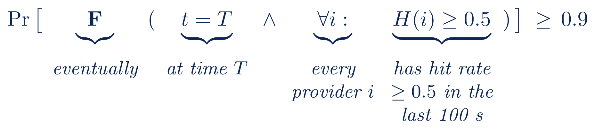
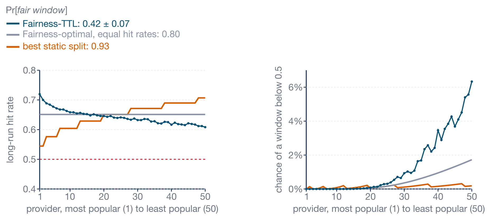
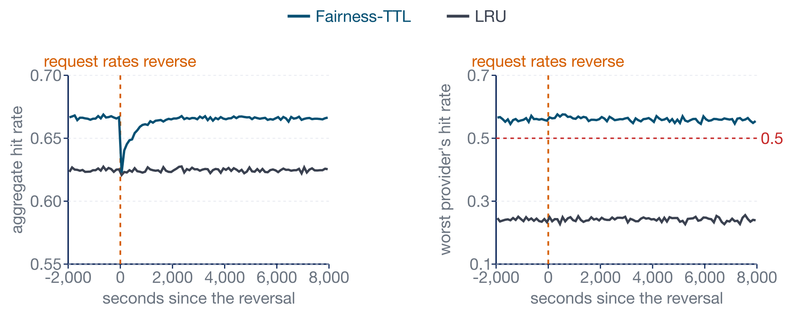
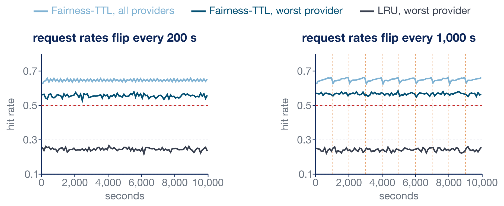

← Back · Extra · The Case for Automated Probabilistic Reasoning for Network Performance Analysis (HotNets ’26)
Case study: (Cache) Congestion Control
Fairness-TTL, the online controller of (Cache) Congestion Control (Bahadori et al., HotNets '26; explorer), written in Buffy [HotNets '24]
Question: in a given 100 s window, does every provider get at least half of its requests served from the cache? We call such a window fair.
20 providers: Fairness-TTL's windows are fair with probability 0.98 ± 0.01, so the query (≥ 0.9) holds.
50 providers: by the paper's measure nothing changes (provider inequality, CoV 0.037 in both cases), yet the probability falls to 0.42 ± 0.07 and the query fails.
Why: the least popular providers send few requests per window, and Fairness-TTL gives them the lowest hit rate (0.61, against 0.72 for the most popular).
The program
cache() {
global int[NO] ttl; // per object: its TTL
global int[P] h; // per provider: hit-rate estimate
global int μ; // the price of cache space
//@ monitor int[P] hits, reqs; // per provider and window: H(i) = hits(i) / reqs(i)
(i, o) ~ Zipf(P) × Zipf(N); // one step = one request
hit = cached[o] & age >= Dfetch;
s = λ[o] / (h[i] * Λ[i]) - μ; // marginal utility minus price
if (s > 0)
ttl[o] += 1000; // additive increase: 1 s
else
ttl[o] /= 2; // multiplicative decrease
h[i] += (hit - h[i]) / τreqs;
if (timers >= C) // overbooked: more live timers than slots
μ += Δμ; // price up
else
μ -= Δμ; // price down
if (!cached[o] & s > 0)
insert(o); // evict the earliest-expired, else LRU
}
| P = 20 | providers; request rates Λi Zipf(1) |
| N = 50 | objects per provider; popularity Zipf(1) |
| C = 20% of P·N slots | cache capacity |
| Dfetch = 175 ms | origin fetch delay |
| 100 requests/s | Poisson; one program step per request |
| τreqs = 1,024 | tunable: h[i] averages about provider i's last 1,024 requests |
| Δμ = 1/65,536 | tunable: step of the price μ per request |
h[i], λ[o], Λ[i] | running estimates: provider hit rate, object and provider request rates |
From the paper's rule to the code
| → | s = λ[o] / (h[i] * Λ[i]) - μ | as in paper |
| TTL + 1 s if Score > 0, else TTL × ½ | → | ttl[o] += 1000, ttl[o] /= 2 | as in paper |
| μ rises when the cache is full of unexpired objects | → | if (timers >= C) μ += Δμ | as in paper |
With the paper's settings α = 1, V(h) = h, w = so = 1, β = 0, .
Ours where the paper is silent: the estimator weight τreqs, the step Δμ, counting evicted objects' live timers as occupancy, admitting a miss only if s > 0, and Dfetch.
The query

H(i) = hits(i) / reqs(i) over [T − 100 s, T]
- Test: each independent run checks the one window ending at T; a sequential test (SPRT) answers yes or no, wrong at most 1% of the time.
- Cross-check: long runs cut into successive windows; the share of fair windows estimates the same probability (± 95% interval over runs).
20 providers: the query holds
| policy | answer | evidence |
|---|
| LRU | no | 0 of 5 runs |
| Efficiency-optimal | no | bound: at most 0.80 |
| Fairness-optimal | yes | 42 of 42 runs |
| Fairness-TTL | yes | 42 of 42 runs |
Efficiency-optimal: its least popular provider's expected window hit rate is 0.399, so the probability is at most 0.80. Cross-check for Fairness-TTL: 0.98 ± 0.01.
50 providers: same CoV, far fewer fair windows
| 20 providers | 50 providers |
|---|
| least popular provider's requests per window | 139 | 44 |
| Fairness-TTL: provider inequality (CoV) | 0.037 | 0.037 |
| Fairness-TTL: most / least popular provider's hit rate | 0.70 / 0.61 | 0.72 / 0.61 |
| Fairness-TTL: Pr[fair window] | 0.98 ± 0.01 | 0.42 ± 0.07 |
| LRU: Pr[fair window] | 0.00 | 0.00 |
Same controller and per-provider cache share; fixed popularity. Fairness-TTL 5 and 10 runs, LRU 20 and 5.

Right: the chance a provider's hit rate in a 100 s window falls below 0.5 (for Fairness-TTL, computed from its long-run hit rates).
Why it fails at 50 providers
- Fewer requests per provider. The least popular provider sends only about 44 requests per window (139 at 20 providers), so its window hit rate swings more.
- The least popular providers get the lowest hit rate. Fairness-TTL gives them about 0.61, close to the 0.5 bar, exactly where the swings are largest.
- Every provider must clear the bar at once. With many such providers, the chance that none falls short drops to 0.42 ± 0.07.
Best static split (each provider permanently caches its ki most popular objects, with the ki chosen to maximise Pr[fair window]; less popular providers get more): Pr[fair window] = 0.93.
Low provider inequality does not imply fair windows: as providers multiply, the less popular ones need more than an equal share.
20 providers when popularity reverses

Once: the most popular provider becomes the least popular and vice versa.

Back and forth: with flips every 200 s or 1,000 s.
Caveats
- Our reconstruction, tuned at 20 providers and not re-tuned at 50; LRU and Fairness-optimal answers at 20 use a simpler model of the same cache.
- Equal and best-split values are exact for static allocations; 0.93 lies between 0.85 and 0.95, where the test could answer either way.